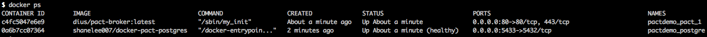

TL;DR
Healthcheck in docker was introduced in docker compose version 2.1 and up.
In version 1.12, Docker added the ability to perform health checks directly in the Docker engine — without needing external monitoring tools or sidecar containers.
Configure a check that’s run to determine whether or not containers for this service are “healthy”
This is a great addition because a container reporting status as Up 1 hour may return errors. The container may be up but there is no way for the application inside the container to provide a status.
Docker compose example
I will guide you through an example of using healthcheck in my pact broker demo.
Github repo can be found at https://github.com/shavo007/pact-demo
Pact broker has two containers:
- Postgres
- Pact broker
Health check options
The health check related options are:
test: must be either a string or a list. If it’s a list, the first item must be either NONE, CMD or CMD-SHELL. Health check commands should return 0 if healthy and 1 if unhealthy.
interval: this controls the initial delay before the first health check runs and then how often the health check command is executed thereafter. The default is 30 seconds.
- retries: the health check will retry up to this many times before marking the container as unhealthy. The default is 3 retries.
- timeout: if the health check command takes longer than this to complete, it will be considered a failure. The default timeout is 30 seconds.
Below is the docker compose file
The exit code has to be binary, which means 0 or 1 - any other value is not supported. The code || exit 1 makes sure we only get a binary exit code and nothing more exotic.
Waiting for PostgreSQL to be "healthy"
A particularly common use case is a service that depends on a database, such as PostgreSQL. We can configure docker-compose to wait for the PostgreSQL container to startup and be ready to accept requests before continuing.
The following healthcheck has been configured to periodically check if PostgreSQL reponds to the \l list query.
Now that we have defined the instructions, lets kick it off:
docker-compose up --build
docker-compose waits for the PostgreSQL service to be "healthy" before starting pact broker.
Are we healthy then?
Once you start the container, you will be able to see the health status in the docker ps output.

You can see the health check status of the postgres container is healthy. Pact broker container depends on this container and waits until it is healthy.
How do we inspect it?
Using
docker inspect
we can view the output from the command.
docker inspect --format "{{json .State.Health.Status }}" pactdemo_postgres_1
"healthy"
You can use jq if you find the docker inspect command verbose.